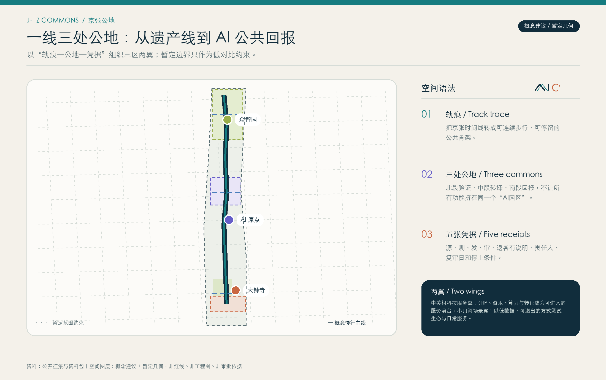
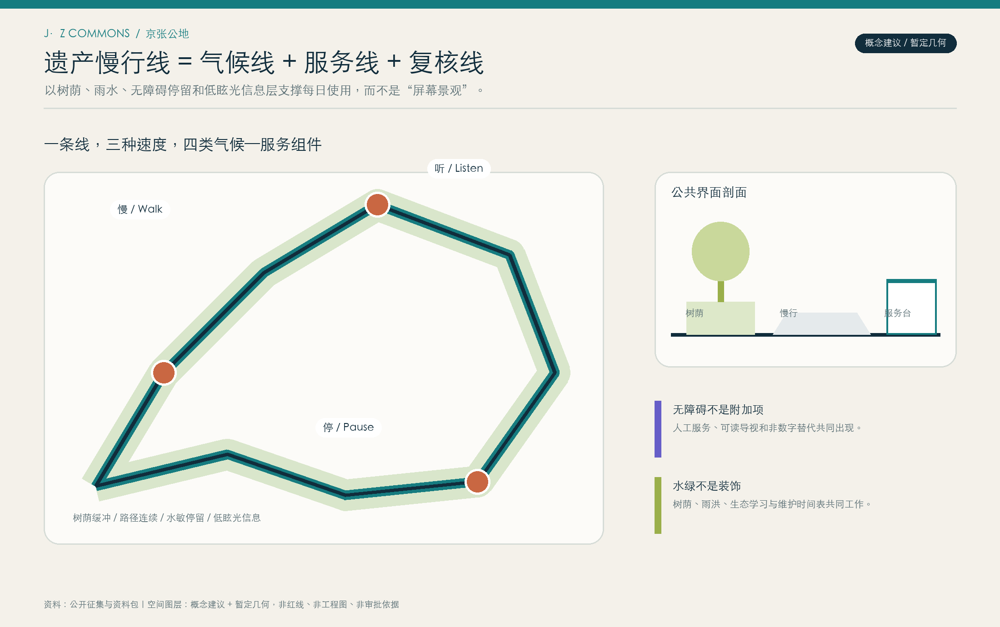
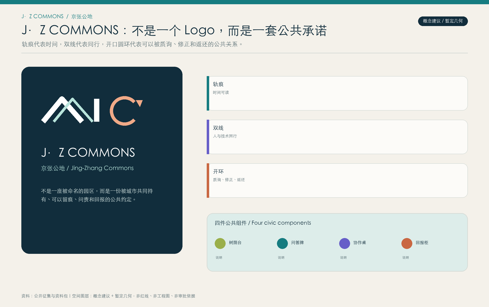
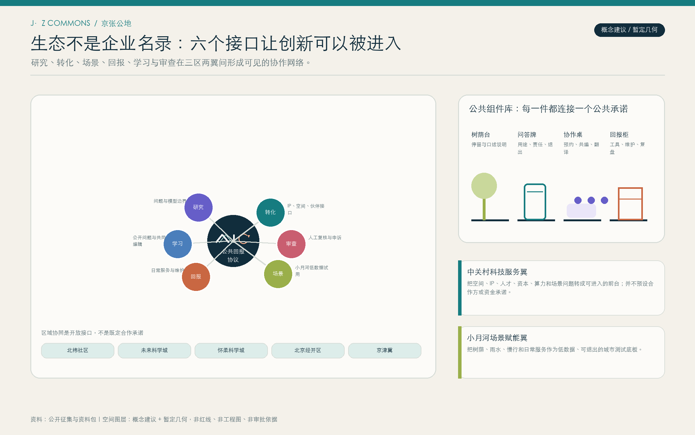
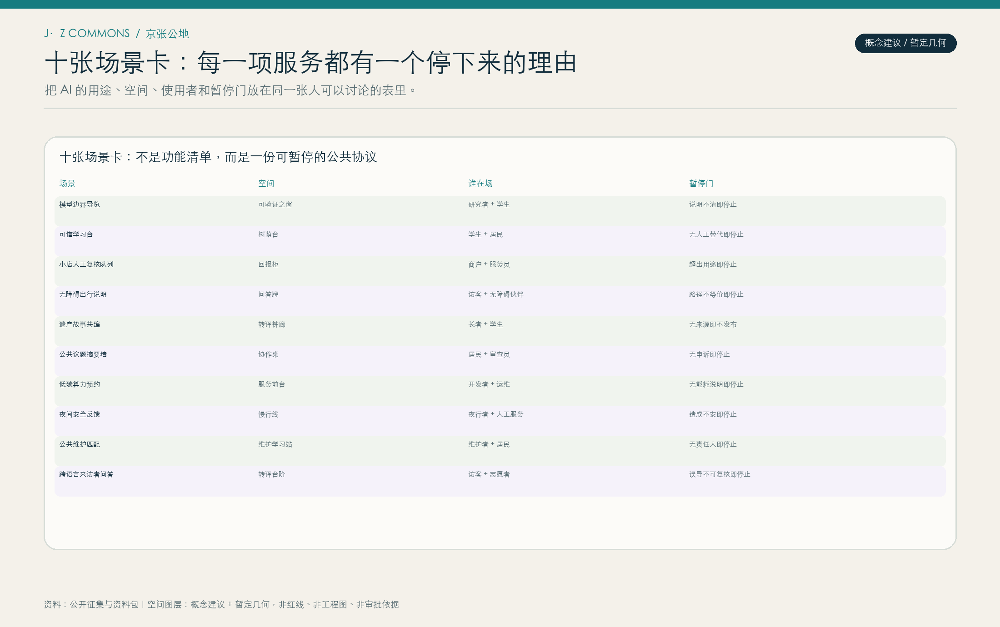
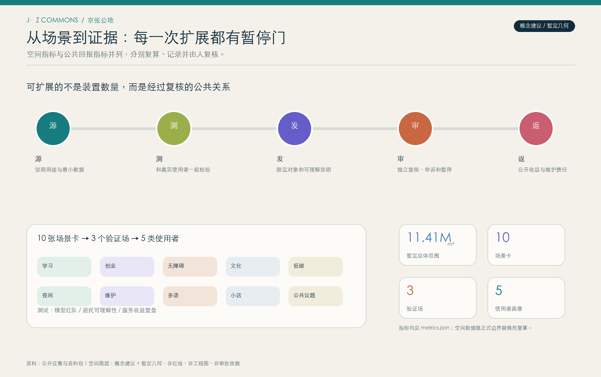

轨痕
一条深色慢行—气候—服务主线，把遗产时间转成日常公共骨架。
J·Z COMMONS / 京张公地
把百年京张的时间线，转成一条能被每日行走、停留、质询和维护的 AI 公共回报带。

一条深色慢行—气候—服务主线，把遗产时间转成日常公共骨架。
众智园验证、AI原点翻译、大钟寺回报，分别解决不同的公共关系。
源、测、发、审、返让每项服务有用途、责任、复审和暂停门。



使用 Tab 与 Enter 在三段路径之间切换；每一段都同时给出使用者、服务和暂停门。
谁在场：研究者、学生
服务：模型边界导览与红队复盘
暂停门：说明不清即停止
谁在场：学生、居民
服务：协作桌与多语人工服务
暂停门：无人工替代即停止
谁在场：小店、维护者
服务：回报柜与维护学习站
暂停门：无责任人即停止



十张场景卡将用途、空间、使用者与暂停门放在同一张表里，避免把“AI场景”写成无主体、无边界的技术清单。
High Line 的可逆公共骨架 → 京张轨痕
不复制形象或旅游/地产逻辑Superkilen 的参与性 → 多语导视与问题卡
不移植物件和图案Oodi 的预约、制作、无障碍 → 翻译公地
不假定同等建筑或资源one-north + Station F → 服务翼与五张凭据
不转移机构、数据或规模Smart Kalasatama → 代表性使用者与公开复盘
不复制数据或治理模型Ars Electronica → 开放账本周与双语协议
不复制活动品牌或伙伴Cheonggyecheon 的安全与维护 → 小月河场景底板
不主张水文/工程结论每一项审阅入口都能回到图面、文本、几何、指标、来源或假设；它们共同构成可追问的概念提交包。

方案把空间数据、场景卡、测试验证、使用者画像、运营阶段、来源和假设一起交付；其中可复算的在GeoJSON与metrics.json中，可讨论的在图面与文本中，可暂停的在五张凭据中。